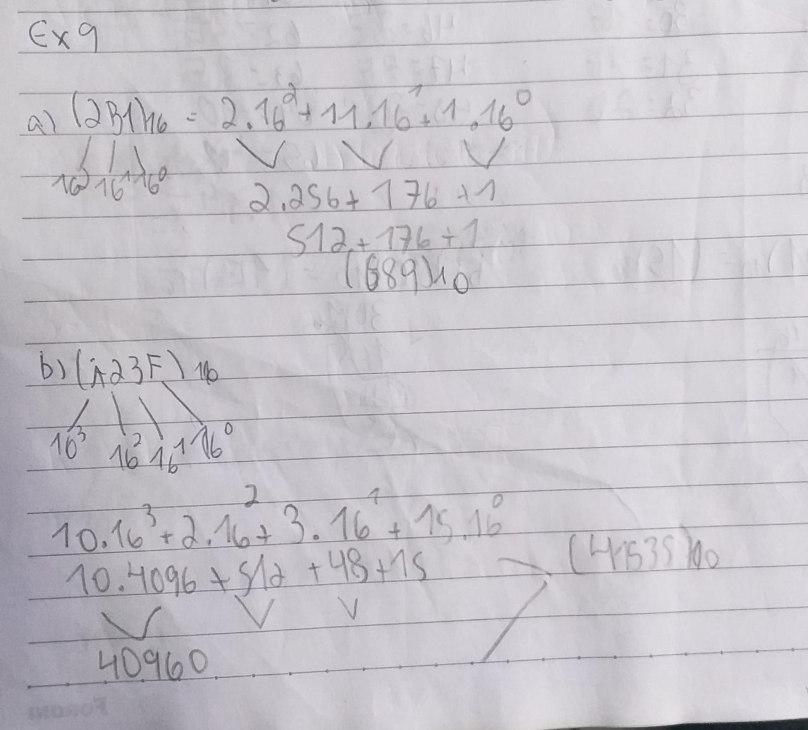
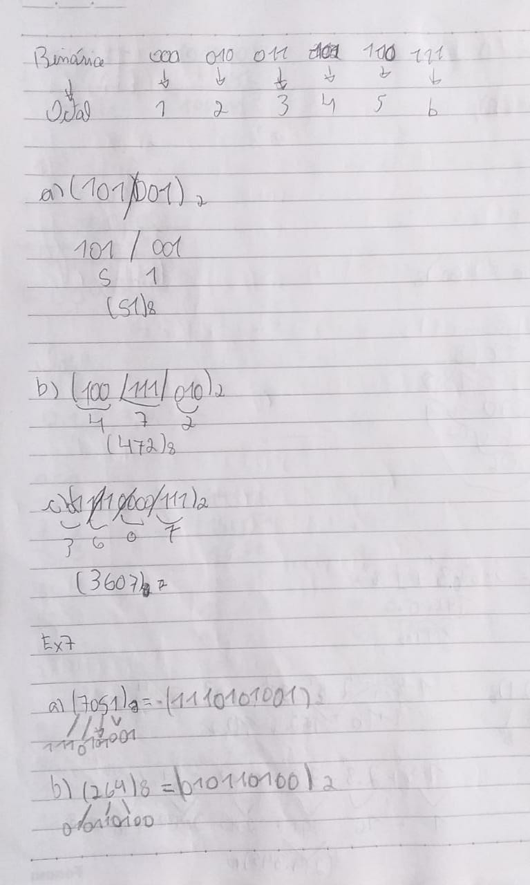
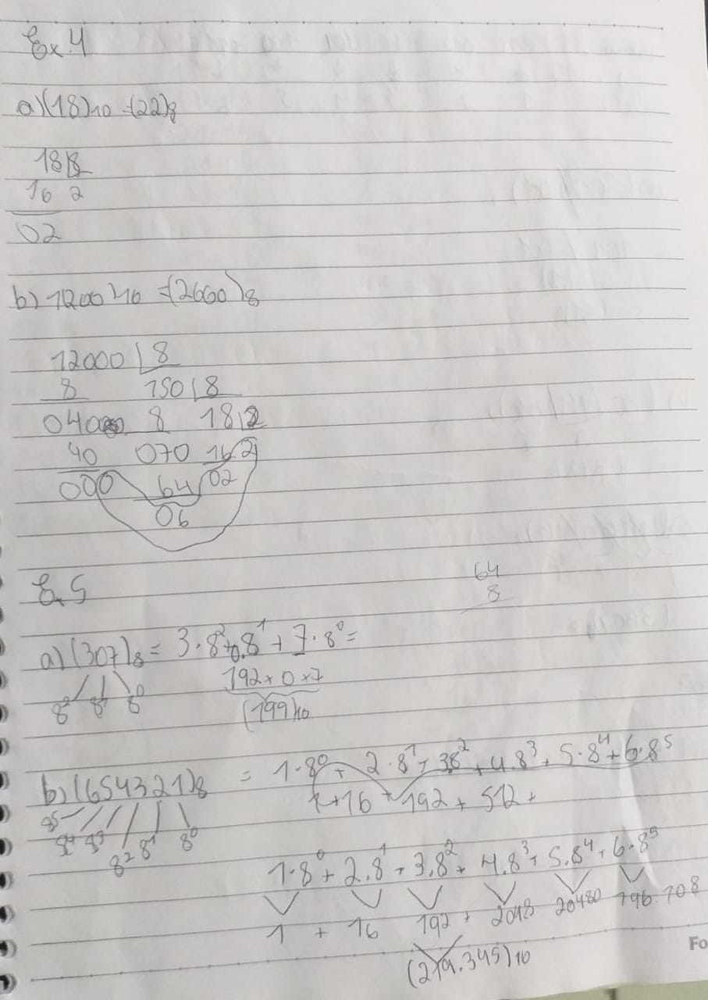
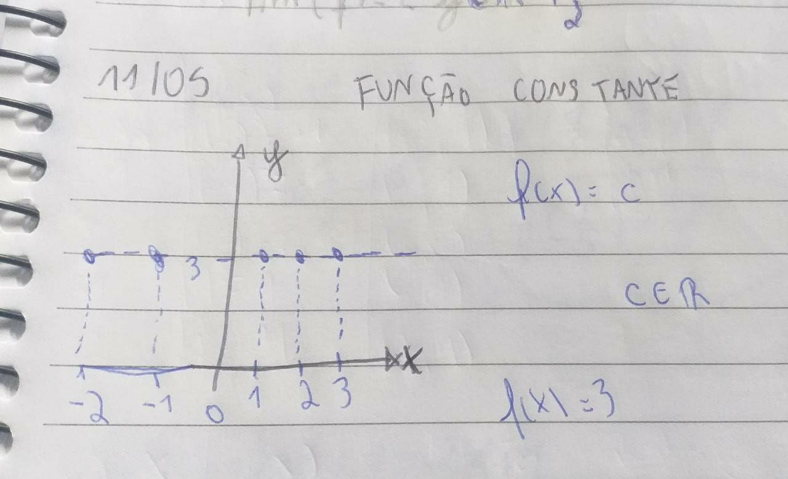
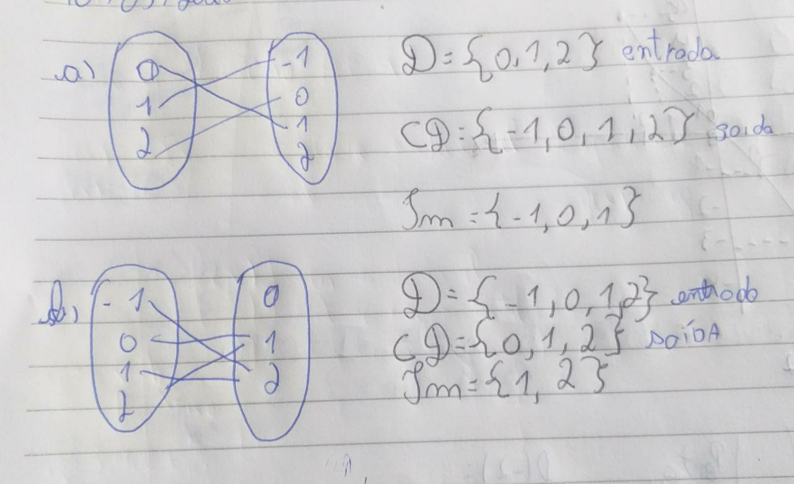
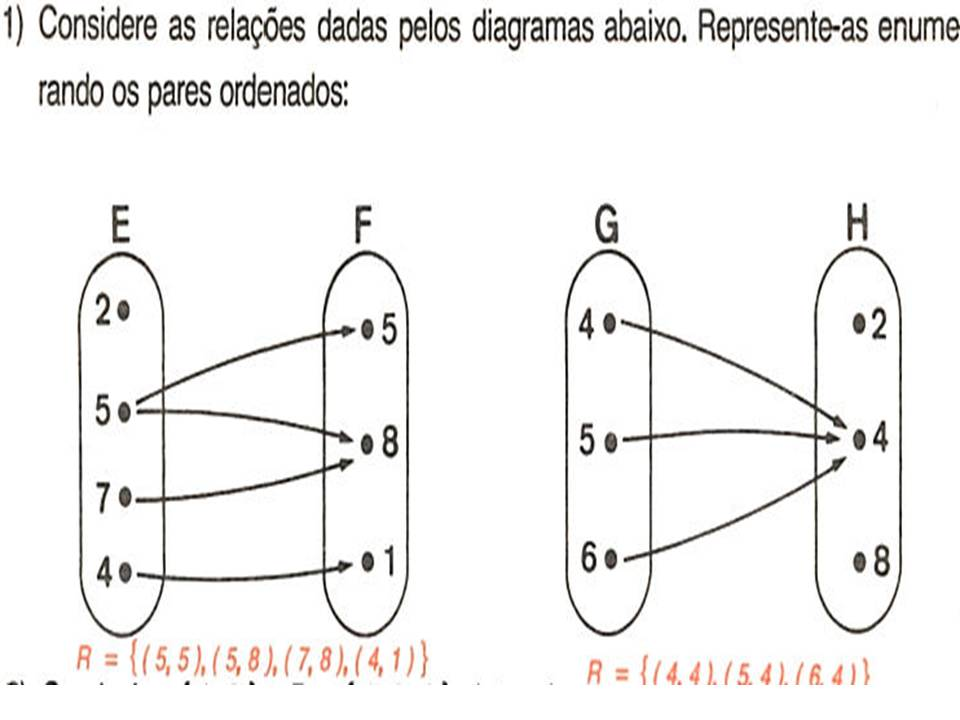
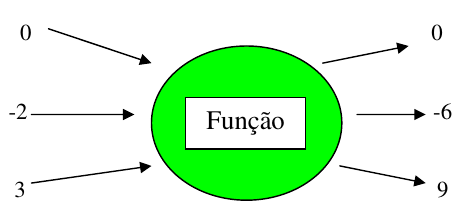
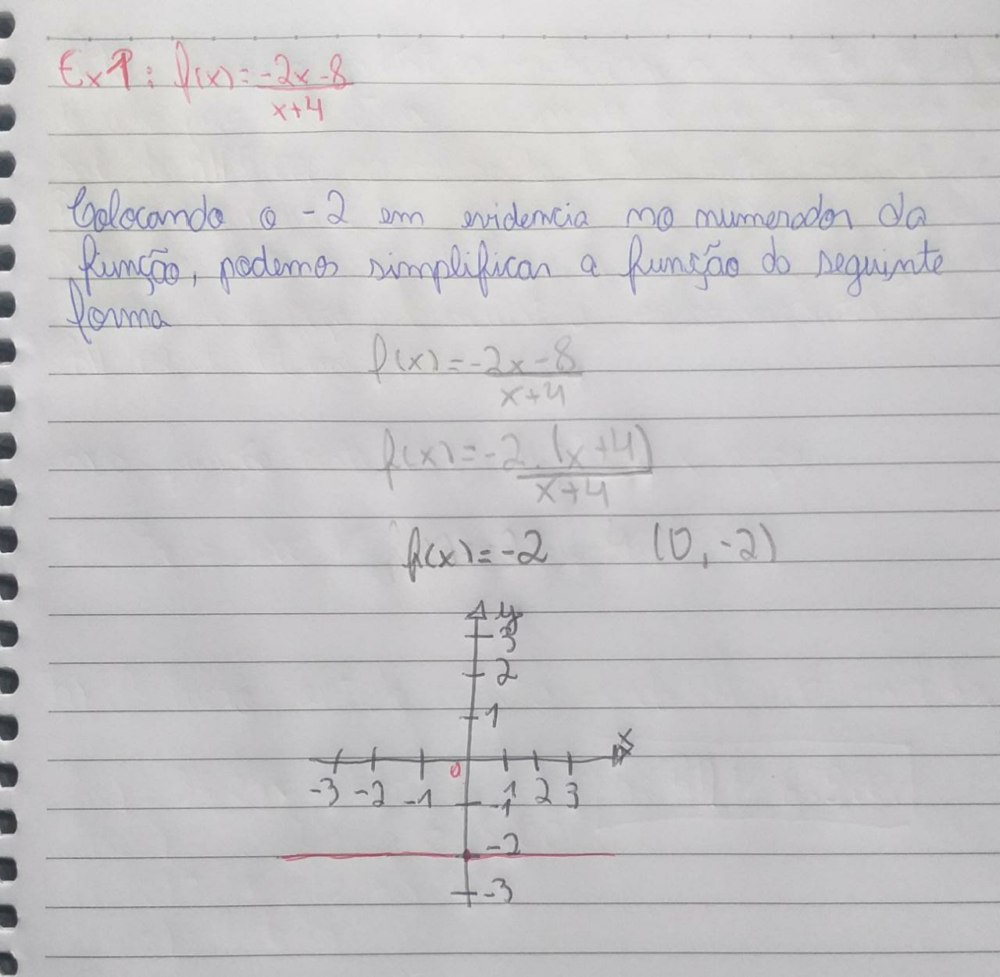
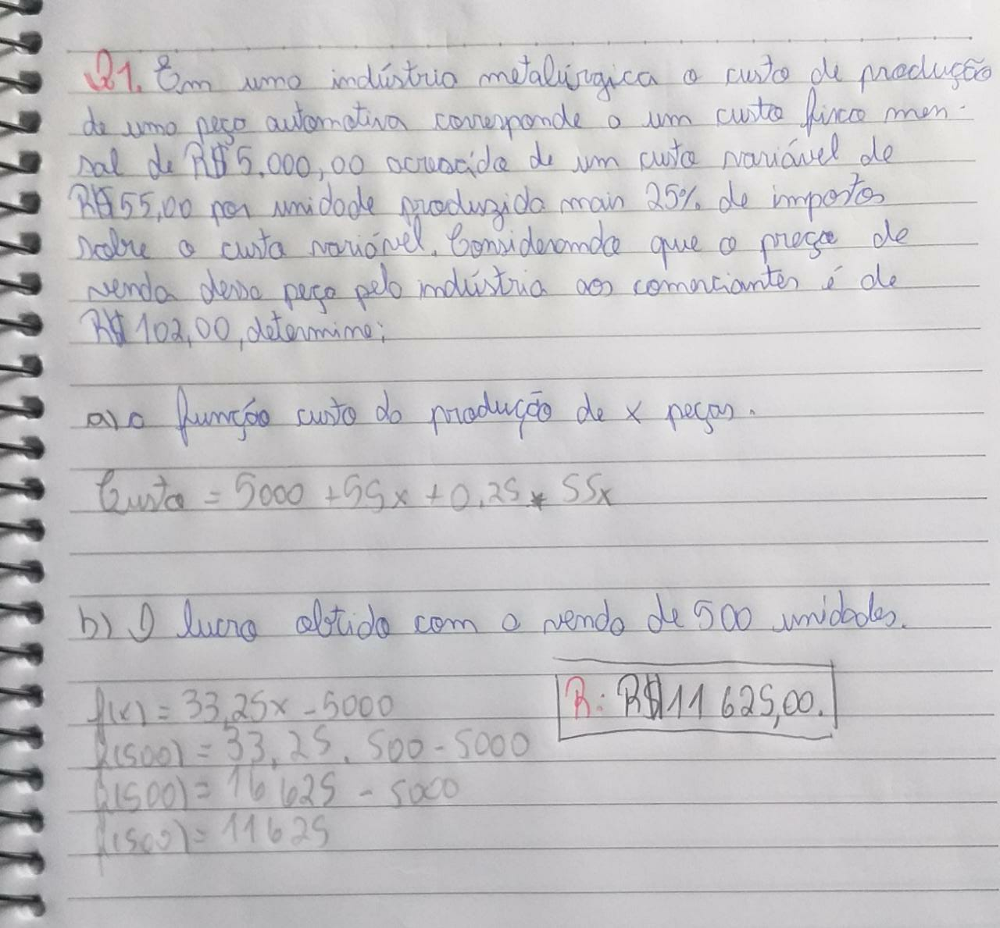

Facilidades
1. SISTEMA DE NUMERAÇÕES
1.1 Sistema decimal, binário, octal e hexadecimal
O que é um Sistema de Numeração?
Um sistema de numeração consiste num conjunto de símbolos usados
para representar as quantidades numéricas. Um sistema que possui dez símbolos para representar todos os números
é também chamado de Sistema
de Base Dez. Um sistema que usa dois símbolos, é chamado de Base Dois ou Binário, tambem possivel ter base 2,
base 8, base 16, base 20, base 60, etc...
Para a área da Informática temos 4 bases que são importantes:
Sistema Decimal (0, 1, 2, 3, 4, 5, 6, 7, 8, 9)
Sistema Binário (0, 1)
Sistema Octal (0, 1, 2, 3, 4, 5, 6, 7)
Sistema Hexadecima (0, 1, 2, 3, 4, 5, 6, 7, 8, 9, A, B, C, D, E, F)
Observe a tabela abaixo, demonstrando um pouco das conversões das 4 bases:
| Decimal |
Binário |
Octal |
Hexadecimal |
| 17 |
10001 |
21 |
F |
| 26 |
11010 |
32 |
1a |
| 43 |
10111 |
53 |
2b |
| Exemplo 1. |
Exemplo 2. |
Exemplo 2. |
| 
| 
| 
|
2. Dízima Perídoica
O que é dízima periódica?
Dízimas periódicas são números infinitos e periódicos. Infinitos, pois
eles não possuem fim, e periódicos, pois certas partes deles se repetem, isto é, possuem um período. Além disso,
as dízimas periódicas
podem ser representadas na forma fracionária, ou seja, podemos dizer que elas são números racionais. Se
dividirmos o numerador de uma fração pelo denominador e encontrarmos uma dízima, então essa fração será chamada
de fração geratriz. As
dízimas podem ser classificadas como simples e compostas.
1.2 Dízima Periódica SIMPLES e COMPOSTA:
O que é dízima periódica SIMPLES?
A dízimas são chamadas de simples quando apresentam a parte
inteira e após a vírgula apenas algarismos que se repetem. São exemplos de dízimas periódicas simples:
0,34343434... → parte inteira igual
a 0 e período igual a 34.
O que é dízima periódica COMPOSTA?
Uma dízima periódica composta possui parte inteira (que vem
antes da vírgula), parte não periódica e período, que vem depois da vírgula. O que diferencia uma dízima
periódica simples de uma composta
é que, na simples, só há o período depois da vírgula; na composta, existe uma parte que não se repete depois da
vírgula.
Exemplos 1 (simples):
1,5888…
1 → parte inteira
5 → parte não periódica
8→ período
32,01656565…
32 → parte inteira
01 → parte não periódica
65 → período
Exemplos 2 (composta):
3,125555... → parte inteira igual a 3, parte não periódica igual a 12 e período igual a 5.
1,7863333... →
parte inteira igual a 1, parte não periódica igual a 786 e período igual a 3.
11,2350505050... → parte
inteira igual a 11, parte
não periódica igual a 23 e período igual a 50.
Exemplo 3 Simples e Composta (equações)
| Exemplo 1. |
Exemplo 2. |
| 
|
|
Dificuldades
1. FUNÇÕES
1.1 Noção de Função
O que é uma Função?
Funções matemáticas são expressões numéricas e algébricas (números e letras),
elas possuem dois lados separados pelo sinal de igual (=) e obedecem uma lei de formação. Em um de seus lados
aparece o “f(x)”,
conhecido popularmente como “y”. Do outro lado, temos um conjunto de valores rodeando a incógnita “x”. Esses
valores são chamados de regra matemática. Ser uma função significa ter dependência, ou seja, o valor de f(x) ou
y se modifica
à medida que modificamos o valor de x. Por isso, as soluções para as funções vêm em pares ordenados (x, y).
Confira abaixo alguns exemplos:
| Exemplo 1. |
Exemplo 2. |
| 
| 
|
1.2 Máquina de Funções
Como podemos entender melhor?
Uma ideia muito interessante para ajudar a entender esse conceito
matemático é pensar transforme-se em uma função semelhante a uma máquina que converte números. Isso significa
que cada número inserido
é alterado para obter um valor e repetir a saída, com isso temos números em um conjunto de entrada e números em
um conjunto e exportar de um modo geral, o número que a máquina pode inserir é real. Mas é possível utilizar
qualquer tipo
de operação dentro desta máquina e combinações entre elas: adição, subtração, multiplicação, divisão, potências,
raízes, razões trigonométricas, logaritmos, etc...
Confira abaixo alguns exemplos sobre a máquina de funções:
| Exemplo 1. |
Exemplo 2. |
| 
| .jpeg)
|
2. FUNÇÃO CONSTANTE E FUNÇÃO AFIM
2.1 Função Constante
que é uma Função Constante?
A função constante é a função cuja lei de formação é f(x) = k. A
função constante é um caso particular de função. Dados o domínio e o contradomínio no conjunto dos números
reais, a função constante
é a função que possui lei de formação igual a f(x) = k, em que k é um número real. Essa lei de formação nos
mostra que independentemente do valor da variável x, a imagem da função será igual a k. Assim, ao realizar a
representação gráfica
da função constante, encontraremos uma reta paralela ao eixo horizontal.
Confira abaixo alguns exemplos:
| Exemplo 1. |
Exemplo 2. |
| 
|
|
2.2 Função Afim
O que é uma Função Afim?
A função afim, também chamada de função do 1º grau, é uma função f : ℝ→ℝ,
definida como f(x) = ax + b, sendo a e b números reais. As funções f(x) = x + 5, g(x) = 3√3x - 8 e h(x) = 1/2 x
são exemplos de
funções afim. Neste tipo de função, o número a é chamado de coeficiente de x e representa a taxa de crescimento
ou taxa de variação da função, já o elemento b é chamado de termo constante.
Como descobrir uma Função Afim?
Pela definição de função afim, temos que ela é determinada pela
seguinte expressão f(x)=ax+b, ou seja, para determinar tal função, basta encontrarmos os coeficientes a, b.
Veremos que para descobrir
estes coefic ientes precisamos apenas de dois pontos e o valor da função nesses pontos.
Confira abaixo alguns exemplos:
| Exemplo 1. |
Exemplo 2. |
| 
| 
|
HOME